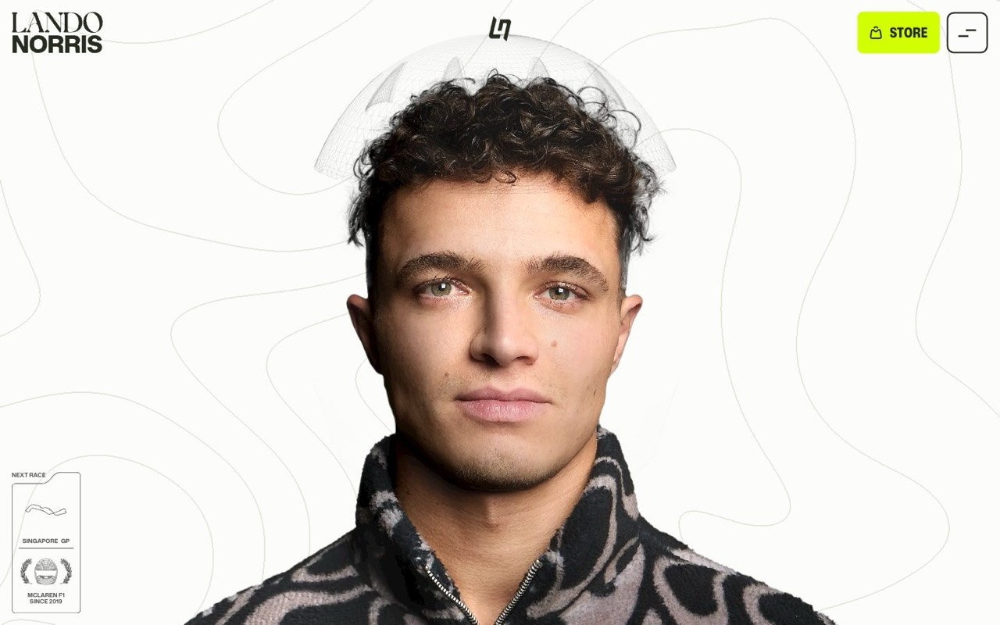

November 20258,18 / 10Webflow · GSAP · WebGL
Lando Norris
OFF+BRAND · uvádzaný ako Site of the Year 2025Prvá obrazovka je iba tvár. Kde ide myš, cez tvár sa odhalí prilba. Podpis sa sám nakreslí neónovou čiarou, „na trati“ a „mimo trate“ stoja oproti sebe a prilby sú vystavené ako zbierka predmetov s rokom. Celý web má dve farby.
Pre tebaRöntgen namiesto prilby. Uniforma a kód ako dve strany. Sieň systémov od Aethera po Netopiera.
landonorris.com ↗